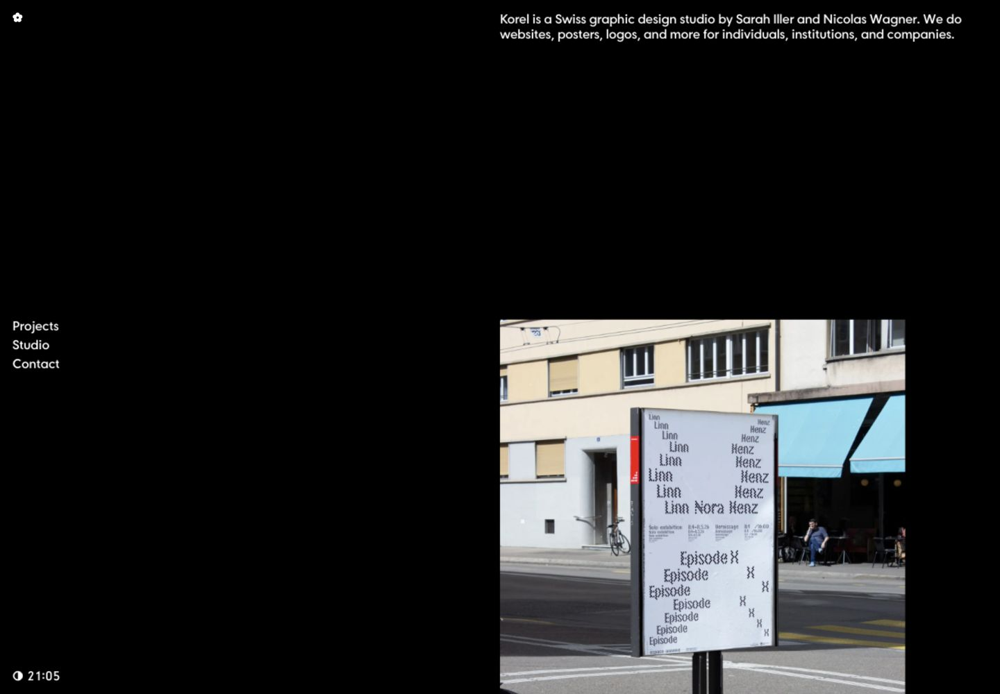
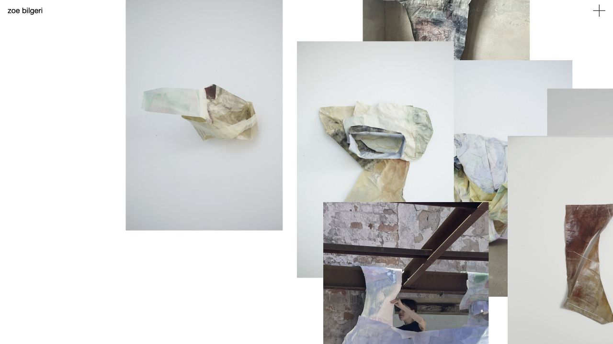
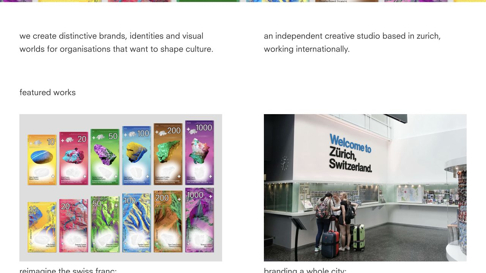
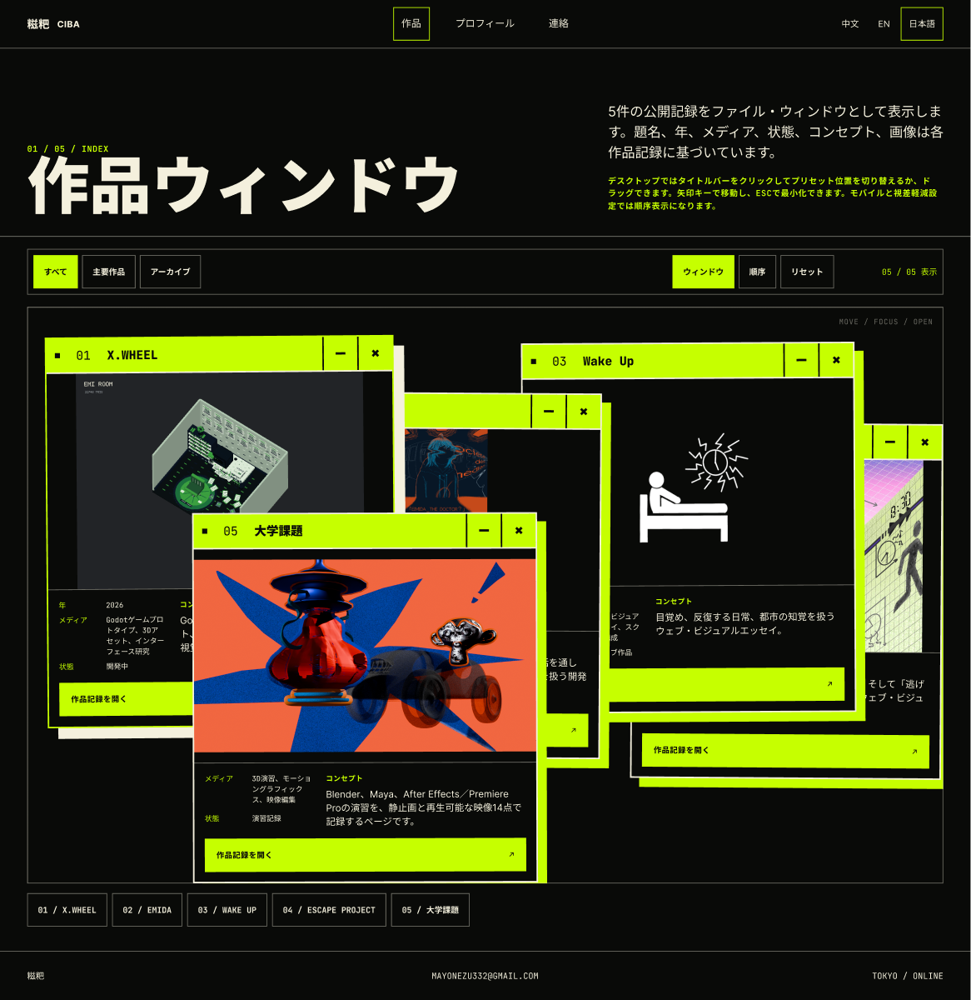

R1 / 主参考Korel Studio
黑色留白、共同对齐线、轻量导航。用于整站的版面节奏。
RESEARCH / 2026.09.28
建议以 R1 的留白和对齐为主，R2 参考拖拽区域的简化，R3 参考作品图与说明的关系。以下是原站截图与明确的借鉴范围。
阶段：参考待你确认 · 网站与 Figma 画稿尚未修改

黑色留白、共同对齐线、轻量导航。用于整站的版面节奏。

保留自由拖拽，让作品图片直接构成画面。用于首页与窗口外观。

图文共用列宽，间距清楚。用于作品详情与 About。
保留全部文字、字体、字号、作品素材和现有交互。用留白、对齐、底面明暗、线条强弱和酸绿面积调整视觉。参考图中的白底、小字号和作品素材不作为 CIBA 的改动目标。
图片可以重叠、拖动，而页面仍然平面、简洁。自由交互不必依赖厚重的界面装饰。
保留窗口拖拽、置顶、收起、恢复、筛选、顺序模式和复位。减弱错位硬阴影，压低闲置标题栏的色彩面积。
保留可识别的拖动手柄与控制按钮。CIBA 不改白底，不套用参考的小字或作品照片。
只用于交互区域的视觉简化。网站的状态与行为继续由现有代码负责。

先让黑与近黑底面占主导，暖纸色用于文字与必要分隔，酸绿用于活动、聚焦与重点动作。面积随页面内容调整，不锁死整站百分比。
首页滚动切换／图片拖动与预设、窗口拖动／键盘移动／收起恢复／置顶、筛选、顺序模式、复位、课程窗口、语言切换、视频和移动端回退。
| 项目 | 功能／架构／技术 | 优点与限制 | 本轮建议 |
|---|---|---|---|
| Astro Nano | 静态作品集与博客；Astro＋TypeScript＋Tailwind；内容集合与组件分离。 | 内容层级清楚；以开发者内容为主，没有空间窗口系统。 | 借鉴层级与留白。保留 CIBA 的字体、字号和页面结构。 |
| DevPortfolio | 配置驱动的 Astro 分区组件；Tailwind；12 列栏目布局。 | 栏目与正文关系容易复用；默认卡片、圆角和阴影需另行处理。 | 参考列关系，用在现有 CSS 中。 |
| interact.js | 框架无关的拖动、缩放、吸附和边界约束。 | 手势能力全面；仍需自行接入窗口与键盘状态。 | 现有拖拽已经满足需求，本轮不增加依赖。 |
| react-rnd | React 可控位置／尺寸组件；组合拖动与缩放库。 | 组件接口清楚；当前网站没有 React，迁移成本高。 | 只作架构比较。 |
| PhotoSwipe | 原生 JavaScript 图片画廊；Core＋Lightbox 分离。 | 适合专门的图片放大；会增加当前没有的查看行为。 | 未来需要放大浏览时再考虑。 |
| BuilderIO / figma-html | HTML 转可编辑设计层的历史 TypeScript 工程。 | 可参考转换思路；README 已说明迁移至 Chrome 扩展。 | 沿用 CIBA 已有 Figma 通道，避免新增旧工具链。 |
工程判断：保留 Astro＋原生 TypeScript 交互，本轮主要调整现有 CSS。仓库对比基于官方 README、源码与文档，未安装模板或做性能跑分。
选主参考与局部参考，明确哪些做法可采用。
完成颜色层次和窗口外观，再给你桌面／手机前后对照。
将确认的对齐与间距扩展到全站，保留内容与交互。
8 类路由 × 3 语言 × 2 尺寸，共 48 个页面视图，另附关键交互状态。
Figma 目标继续使用你提供的文件。新版本独立分组，现有画稿保留。文字、真实图片、窗口和颜色变量可编辑；网站的运行逻辑保存在代码中。字体可用性与换行在导出时核对。
1981 年原始展览图录：节制用色，以文字、图像与留空建立主次。
苏黎世设计博物馆：从构成原则、学生作品与访谈理解设计方法。
出版社原始说明：用一致的系统组织复杂、多语言信息。
保留三色、原字号和互动；在对齐、留白、色彩面积与明暗上作调整。具体比例属于本项目提案。
R1 作为主参考，R2 只简化窗口，R3 采用图文间距。也可以直接指定哪张图喜欢、哪一部分不要。你确认之前，制作范围停在研究与方案。